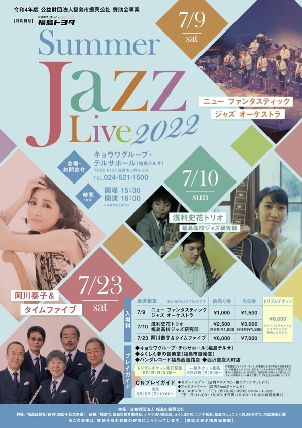

NEWS!!
●●●2ndアルバムリリースツアーのお知らせ
(2023/4/6更新)浅利史花g 壷阪健登p 三嶋大輝b 山崎隼d
ゲスト(6/21公演のみ)曽我部泰紀ts 片山士駿fl
6月9日(金)
静岡藤枝ボディーアンドソウル
open19:00 start20:00
¥4,500
6月10日(土)
愛知名古屋ミスターケニーズ
open18:00 start19:30
予約¥4,000 当日¥4,500
6月11日(日)
三重松阪ジャズ茶房サライ
open17:30 start18:00
¥4,000
6月12日(月)
大阪梅田ミスターケリーズ
open18:00 start19:30
予約¥4,000 当日¥4,500
6月21日(水) 東京丸の内コットンクラブ
open18:00 start19:00
¥5,800〜

●●●2ndアルバムリリースのお知らせ
(2023/4/6更新)2023年4月19日に,2ndアルバム『Thanks For Emily』がリリースされます！
アルバムの詳細はこちら
●●●参加アルバムリリースのお知らせ
(2022/10/18更新)「Generations guitar trio」のアルバムが2022/11/9にリリースされます。
disk union、Amazon、TOWER RECORDS
などで予約が始まりましたので、ぜひチェックしてみてください！

●●●かわさきジャズ２０２２に出演します。その２！！
(2022/8/13更新)１１月１２日(土)昭和音楽大学ユリホール
Colorful JAZZ! with special guest 春風亭昇太
細川千尋p はたけやま裕perc 浅利史花g
スペシャルゲスト：春風亭昇太
開場１７：３０ 開演１８：００
かわさきジャズ２０２２の公式ページはこちら
●●●横濱ジャズプロムナード２０２２に出演します
(2022/8/8更新)１０月８日(土)関内ホール小ホール
１７：３０〜１８：３０
Reborn Wood Sessions
井上銘g 曽根麻央tp,pf 浅利史花g 三嶋大輝d 山田玲ds
横濱ジャズプロムナードの公式ページはこちら
●●●かわさきジャズ２０２２に出演します
(2022/8/8更新)１０月２９日(土)新百合トウェンティワンホール
しんゆりJAZZストリーム DAY1
開場１４：３０ 開演１５：００
出演者：外山喜雄とデキシ―セインツ、守屋純子(p)セクステット、谷口英治(cl)トリオ、Maria Eva(vo)カルテット
※私は谷口英治トリオで出演いたします。
かわさきジャズ２０２２の公式ページはこちら
●●●プチツアー決まりました!
(2022/6/2更新)7月7日(木)
渋谷琥珀
浅利史花g 三嶋大輝b 柳沼佑育d
開場19:00 開演20:00
料金Tabel Charge¥500 +投げ銭
7月8日(金)
山形Warm Stone響蔵
浅利史花g 三嶋大輝b 柳沼佑育d
開場18:30 開演19:00
料金¥4,500(１ドリンク付)
ご予約はこちら090-5593-7871(店主横澤さん)
7月9日(土)
仙台モンドボンゴ
浅利史花g 三嶋大輝b 柳沼佑育d
開場19:00 開演19:30
料金¥3,500
7月10日(日)
福島テルサ
浅利史花g 三嶋大輝b 柳沼佑育d
with 福島高校JAZZ研究部
開場15:30 開演16:00
チケット前売り¥2,500(¥学割1,000) 当日¥3,000(学割¥1,500)

●●●横浜ランドマークタワーにて、ソロギターライブします。
■日 時：2021年12月14日（火） 19：00～19：45頃
■会 場：横浜ランドマークタワー 69階展望フロア「スカイガーデン」（横浜市西区みなとみらい2-2-1）
■料 金：鑑賞にはスカイガーデンの入場料金がかかります。
※再入場できませんのでご注意ください。
【スカイガーデン入場料金】大人1000円ほか
■主 催：横濱 JAZZ PROMENADE 実行委員会
■協 力：横浜ランドマークタワー69階展望フロア スカイガーデン事務局
■問合せ：横濱 JAZZ PROMENADE 実行委員会事務局 045-211-1510（平日9:00-17:00）
公式ウェブサイトhttps://jazzpro.jp/
●●●鹿児島ジャズフェスティバル2021出演のお知らせ
12月に開催される鹿児島ジャズフェスティバル2021に出演します。
詳細はこちら。
●●●公演中止のお知らせ
(2021/9/10更新)10/9に浅利史花カルテットで出演予定だった横濱ジャズプロムナードは、
コロナウイルス感染拡大により中止となりました。
●●●公演中止のお知らせ
(2021/8/27更新)とても残念なお知らせですが、以下の仙台・福島公演は、
コロナウイルス感染拡大により全て中止又は延期となりました。
9/10仙台モンドボンゴ
9/11福島テルサ
9/12福島写真美術館
9/11福島テルサ公演のチケットの払い戻しの詳細はこちら
●●●1stアルバム『Introducin’』のリリースツアーに時間の変更があります
(2021/8/6更新)8/13(金)名古屋Mr.Kenny's
オープン18:00→17:00 スタート19:00→18:00
8/14(土)大阪Mister Kelly's
スタート19:30→19:00
●●●仙台・福島でのコンサートが決まりました
(2012/7/10更新)9/10(金)仙台モンドボンゴ詳細後日
9/11(土)福島テルサ
開場15:30 開演16:00 入場料¥2,500
9/12(日)写真美術館(ミニコンサート)詳細後日
メンバー：浅利史花g 三嶋大輝b 柳沼佑育dr
(9/12のみ浅利史花g、三嶋大輝bのデュオ)
●●●「Introducin'」楽曲配信についてのお知らせ
(2021/6/2更新)配信会社の変更に伴い休止していた「Introducin'」ですが、
本日６月２日より配信が再開されました。
ご不便をおかけし申し訳ありませんでした。
引き続きお楽しみいただければ幸いです！
よろしくお願いいたします。
●●●1stアルバム『Introducin’』のリリースツアーが決まりました。
浅利史花gカルテットw/石田衛p、三嶋大輝b、木村紘ds
8/13(金)名古屋Mr.Kenny's
open18:00 start19:30
前売￥3500 当日￥4000
8/14(土)大阪Mister Kelly's
open18:00 start19:30
前売￥4000 当日￥4500
●●●「Introducin'」楽曲配信についてのお知らせ
(2021/5/12更新)浅利史花「Introducin'」楽曲を配信でお聴き頂いている皆様にお知らせがございます。
配信会社の変更に伴い、皆様には大変心苦しいのですが再配信の手続き等により現在、
楽曲配信が停止されておりますので、再配信されるまで今暫くお時間を頂けますと幸いです。
今後は再配信日が決まり次第、御案内致します。
皆様の御理解・御協力の程、何卒宜しく申し上げます。
●●●MVが完成しました！
（2020/12/11更新）1stアルバム『Introducin’』のMVができました。
今回はなんと、陶芸家ののぐちみかさんとコラボさせて頂きました。
●●●浅利史花×ZEMAITIS 動画公開しました！
(2020/12/11更新)ジャズとの出会いや、1stアルバム『Introducin’』のことなど、23の質問に答えました。
動画の中ではZEMAITISのセミアコとソリッドを弾いています。